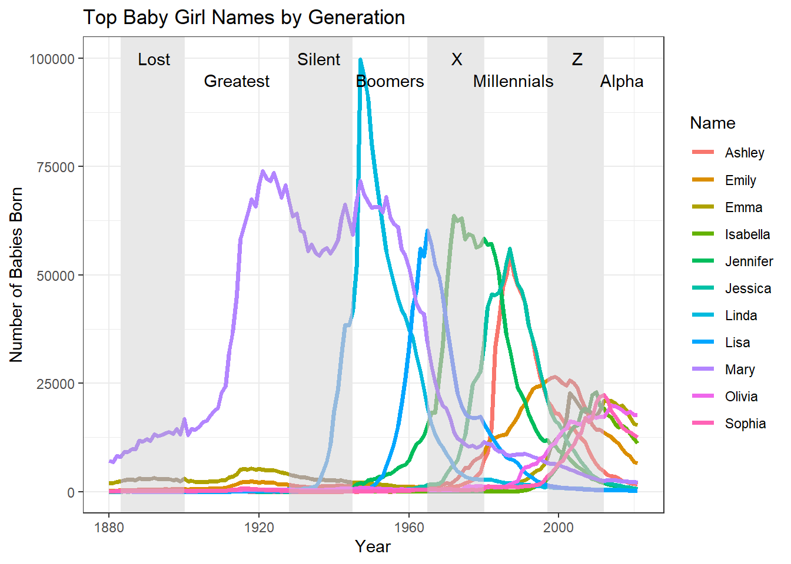
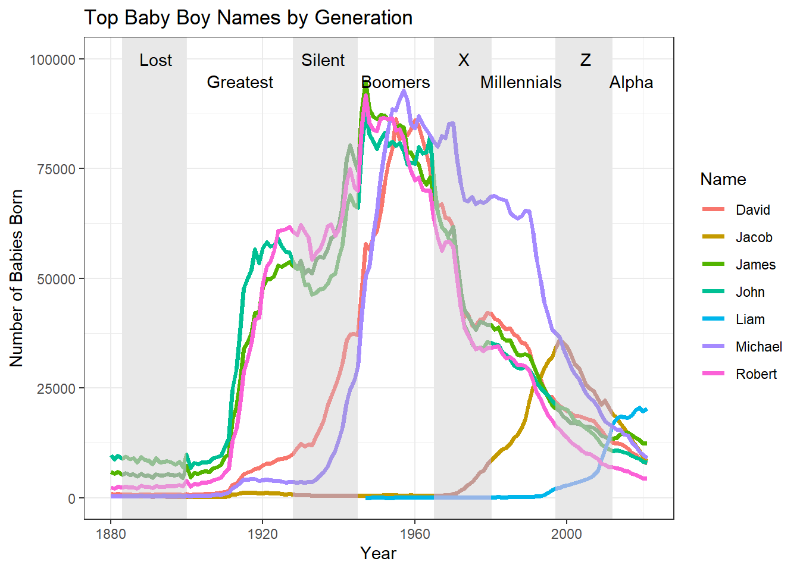
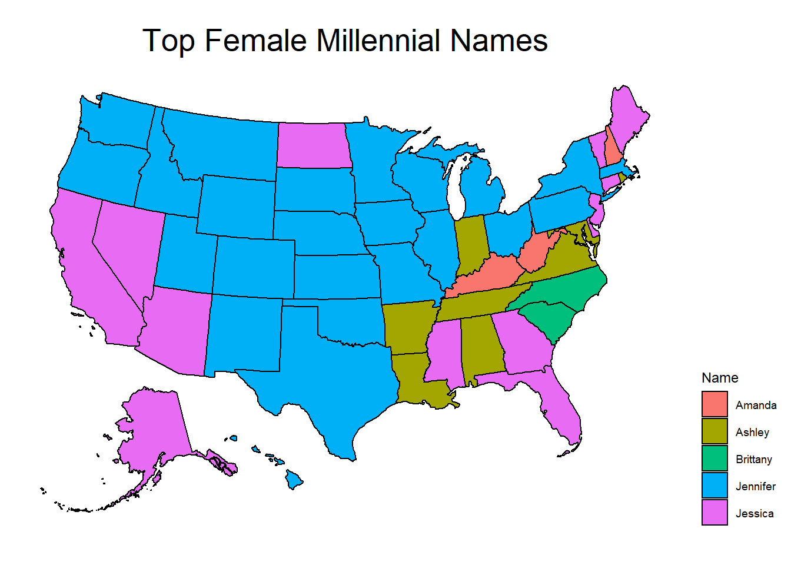
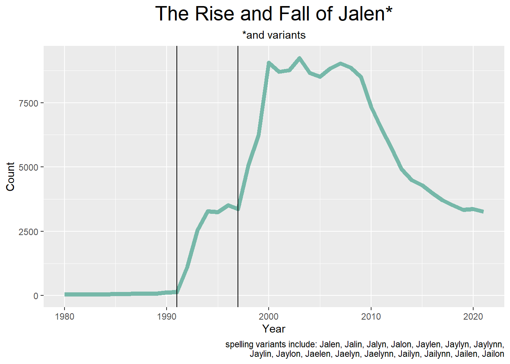

library(tidyverse)
library(ggplot2)
library(lubridate)
library(usmap)
knitr::opts_chunk$set(echo = TRUE, warning=FALSE, message=FALSE)Final Project
final
Baby Names in the US
Introduction
A person’s name can be a reflection of many things: their gender, when and where they were born, who or what their parents wanted them to be, etc.
For this data analysis I chose to investigate the following:
- How have American names evolved over time?
- How do names vary between states?
- What is the impact of a specific celebrity on the popularity of a name?
Setting Up
The Data
My data was originally sourced from the Social Security Administration (SSA). It includes babies born from 1880-2021, organized by state, sex, year, name, and count (number of babies born with that name), For privacy purposes, this data does not include instances where fewer than 5 babies were born with that name.
Unfortunately, I discovered too late that there is already a “babynames” package in R. Instead of using this package, I downloaded 51 files (50 states + Washington D.C.) from the SSA. First, I read in each file. I then read in a tidied version of the national dataset from Kaggle, saving me the effort of reading in 141 additional files.
library(readr)
AK <- read_csv("~/School/UMASS/DACSS601/Final/namesbystate/AK.csv",
col_names = FALSE)
AL <- read_csv("~/School/UMASS/DACSS601/Final/namesbystate/AL.csv",
col_names = FALSE)
AR <- read_csv("~/School/UMASS/DACSS601/Final/namesbystate/AR.csv",
col_names = FALSE)
AZ <- read_csv("~/School/UMASS/DACSS601/Final/namesbystate/AZ.csv",
col_names = FALSE)
CA <- read_csv("~/School/UMASS/DACSS601/Final/namesbystate/CA.csv",
col_names = FALSE)
CO <- read_csv("~/School/UMASS/DACSS601/Final/namesbystate/CO.csv",
col_names = FALSE)
CT <- read_csv("~/School/UMASS/DACSS601/Final/namesbystate/CT.csv",
col_names = FALSE)
DC <- read_csv("~/School/UMASS/DACSS601/Final/namesbystate/DC.csv",
col_names = FALSE)
DE <- read_csv("~/School/UMASS/DACSS601/Final/namesbystate/DE.csv",
col_names = FALSE)
FL <- read_csv("~/School/UMASS/DACSS601/Final/namesbystate/FL.csv",
col_names = FALSE)
GA <- read_csv("~/School/UMASS/DACSS601/Final/namesbystate/GA.csv",
col_names = FALSE)
HI <- read_csv("~/School/UMASS/DACSS601/Final/namesbystate/HI.csv",
col_names = FALSE)
IA <- read_csv("~/School/UMASS/DACSS601/Final/namesbystate/IA.csv",
col_names = FALSE)
ID <- read_csv("~/School/UMASS/DACSS601/Final/namesbystate/ID.csv",
col_names = FALSE)
IL <- read_csv("~/School/UMASS/DACSS601/Final/namesbystate/IL.csv",
col_names = FALSE)
IN <- read_csv("~/School/UMASS/DACSS601/Final/namesbystate/IN.csv",
col_names = FALSE)
KS <- read_csv("~/School/UMASS/DACSS601/Final/namesbystate/KS.csv",
col_names = FALSE)
KY <- read_csv("~/School/UMASS/DACSS601/Final/namesbystate/KY.csv",
col_names = FALSE)
LA <- read_csv("~/School/UMASS/DACSS601/Final/namesbystate/LA.csv",
col_names = FALSE)
MA <- read_csv("~/School/UMASS/DACSS601/Final/namesbystate/MA.csv",
col_names = FALSE)
MD <- read_csv("~/School/UMASS/DACSS601/Final/namesbystate/MD.csv",
col_names = FALSE)
ME <- read_csv("~/School/UMASS/DACSS601/Final/namesbystate/ME.csv",
col_names = FALSE)
MI <- read_csv("~/School/UMASS/DACSS601/Final/namesbystate/MI.csv",
col_names = FALSE)
MN <- read_csv("~/School/UMASS/DACSS601/Final/namesbystate/MN.csv",
col_names = FALSE)
MO <- read_csv("~/School/UMASS/DACSS601/Final/namesbystate/MO.csv",
col_names = FALSE)
MS <- read_csv("~/School/UMASS/DACSS601/Final/namesbystate/MS.csv",
col_names = FALSE)
MT <- read_csv("~/School/UMASS/DACSS601/Final/namesbystate/MT.csv",
col_names = FALSE)
NC <- read_csv("~/School/UMASS/DACSS601/Final/namesbystate/NC.csv",
col_names = FALSE)
ND <- read_csv("~/School/UMASS/DACSS601/Final/namesbystate/ND.csv",
col_names = FALSE)
NE <- read_csv("~/School/UMASS/DACSS601/Final/namesbystate/NE.csv",
col_names = FALSE)
NH <- read_csv("~/School/UMASS/DACSS601/Final/namesbystate/NH.csv",
col_names = FALSE)
NJ <- read_csv("~/School/UMASS/DACSS601/Final/namesbystate/NJ.csv",
col_names = FALSE)
NM <- read_csv("~/School/UMASS/DACSS601/Final/namesbystate/NM.csv",
col_names = FALSE)
NV <- read_csv("~/School/UMASS/DACSS601/Final/namesbystate/NV.csv",
col_names = FALSE)
NY <- read_csv("~/School/UMASS/DACSS601/Final/namesbystate/NY.csv",
col_names = FALSE)
OH <- read_csv("~/School/UMASS/DACSS601/Final/namesbystate/OH.csv",
col_names = FALSE)
OK <- read_csv("~/School/UMASS/DACSS601/Final/namesbystate/OK.csv",
col_names = FALSE)
OR <- read_csv("~/School/UMASS/DACSS601/Final/namesbystate/OR.csv",
col_names = FALSE)
PA <- read_csv("~/School/UMASS/DACSS601/Final/namesbystate/PA.csv",
col_names = FALSE)
RI <- read_csv("~/School/UMASS/DACSS601/Final/namesbystate/RI.csv",
col_names = FALSE)
SC <- read_csv("~/School/UMASS/DACSS601/Final/namesbystate/SC.csv",
col_names = FALSE)
SD <- read_csv("~/School/UMASS/DACSS601/Final/namesbystate/SD.csv",
col_names = FALSE)
TN <- read_csv("~/School/UMASS/DACSS601/Final/namesbystate/TN.csv",
col_names = FALSE)
TX <- read_csv("~/School/UMASS/DACSS601/Final/namesbystate/TX.csv",
col_names = FALSE)
UT <- read_csv("~/School/UMASS/DACSS601/Final/namesbystate/UT.csv",
col_names = FALSE)
VA <- read_csv("~/School/UMASS/DACSS601/Final/namesbystate/VA.csv",
col_names = FALSE)
VT <- read_csv("~/School/UMASS/DACSS601/Final/namesbystate/VT.csv",
col_names = FALSE)
WA <- read_csv("~/School/UMASS/DACSS601/Final/namesbystate/WA.csv",
col_names = FALSE)
WI <- read_csv("~/School/UMASS/DACSS601/Final/namesbystate/WI.csv",
col_names = FALSE)
WV <- read_csv("~/School/UMASS/DACSS601/Final/namesbystate/WV.csv",
col_names = FALSE)
WY <- read_csv("~/School/UMASS/DACSS601/Final/namesbystate/WY.csv",
col_names = FALSE)
us_names <- read_csv("~/School/UMASS/DACSS601/Final/names.csv")Data Setup
Each data set has the same variables organized in the same order, so I used bind_rows() to combine the state data into one dataset. The columns were unnamed, so I used rename() to name them.
#bind all datasets
states <- bind_rows(AK, AL, AR, AZ, CA, CO, CT, DC, DE, FL, GA, HI, IA, ID, IL, IN, KS, KY, LA, MA, MD, ME, MI, MN, MO, MS, MT, NC, ND, NE, NH, NJ, NM, NV, NY, OH, OK, OR, PA, RI, SC, SD, TN, TX, UT, VA, VT, WA, WI, WV, WY)
#rename columns
states <- rename(states, "State" = "X1", "Sex" = "X2", "Year" = "X3", "Name" = "X4", "Count" = "X5")
states# A tibble: 6,311,504 × 5
State Sex Year Name Count
<chr> <chr> <dbl> <chr> <dbl>
1 AK F 1910 Mary 14
2 AK F 1910 Annie 12
3 AK F 1910 Anna 10
4 AK F 1910 Margaret 8
5 AK F 1910 Helen 7
6 AK F 1910 Elsie 6
7 AK F 1910 Lucy 6
8 AK F 1910 Dorothy 5
9 AK F 1911 Mary 12
10 AK F 1911 Margaret 7
# … with 6,311,494 more rows
# ℹ Use `print(n = ...)` to see more rowsFrom here I split() the state data into separate datasets by sex, so that I could more easily perform analyses by sex.
#split state data by sex
X <- split(states, states$Sex)
#assign each tibble a name for ease
f_state <- X$F
m_state <- X$MI did the same with the national data.
#split national data by sex
Y <- split(us_names, us_names$Sex)
#assign each tibble a name for ease
f_natl <- Y$F
m_natl <- Y$MVisualizations
How have American names evolved over time?
I wanted to investigate the evolution of American names by creating two line graphs, one for each sex, which shows the most popular names on record and illustrates their popularity over time. I also wanted “social generations” shown on the plots to illustrate which names were most popular with each generation.
First, I pulled the top names for each year. Then, I created dataset filtered for only these names and plotted them.
#top female names nationally, arranged by year
f_natl %>%
group_by(Year) %>%
top_n(1, Count) %>%
arrange(Year)# A tibble: 142 × 4
# Groups: Year [142]
Name Sex Count Year
<chr> <chr> <dbl> <dbl>
1 Mary F 7065 1880
2 Mary F 6919 1881
3 Mary F 8148 1882
4 Mary F 8012 1883
5 Mary F 9217 1884
6 Mary F 9128 1885
7 Mary F 9889 1886
8 Mary F 9888 1887
9 Mary F 11754 1888
10 Mary F 11648 1889
# … with 132 more rows
# ℹ Use `print(n = ...)` to see more rows#top male names nationally, arranged by year
m_natl %>%
group_by(Year) %>%
top_n(1, Count) %>%
arrange(Year)# A tibble: 142 × 4
# Groups: Year [142]
Name Sex Count Year
<chr> <chr> <dbl> <dbl>
1 John M 9655 1880
2 John M 8769 1881
3 John M 9557 1882
4 John M 8894 1883
5 John M 9388 1884
6 John M 8756 1885
7 John M 9026 1886
8 John M 8110 1887
9 John M 9247 1888
10 John M 8548 1889
# … with 132 more rows
# ℹ Use `print(n = ...)` to see more rows#setting up dataset to compare top female names
top_f <- f_natl %>%
filter(Name %in% c("Mary", "Linda", "Lisa", "Jennifer", "Jessica", "Ashley", "Emily", "Emma", "Isabella", "Sophia", "Olivia"))
#top male names nationally, arranged by year
top_m <- m_natl %>%
filter(Name %in% c("John", "Robert", "James", "Michael", "David", "Jacob", "Liam"))
#line plot
fgens <- top_f %>%
ggplot(aes(x=Year, y=Count, group=Name, color=Name)) +
geom_line(size=1.25) +
theme_bw()+
ggtitle("Top Baby Girl Names by Generation") +
ylab("Number of Babies Born") +
#add bars to highlight generations
geom_rect(data = top_f,
aes(xmin = 1883, xmax = 1900, ymin = -Inf, ymax = Inf),
color = NA, fill = "grey", alpha = 0.01)+
geom_rect(data = top_f,
aes(xmin = 1928, xmax = 1945, ymin = -Inf, ymax = Inf),
color = NA, fill = "grey", alpha = 0.01)+
geom_rect(data = top_f,
aes(xmin = 1965, xmax = 1980, ymin = -Inf, ymax = Inf),
color = NA, fill = "grey", alpha = 0.01)+
geom_rect(data = top_f,
aes(xmin = 1997, xmax = 2012, ymin = -Inf, ymax = Inf),
color = NA, fill = "grey", alpha = 0.01)+
annotate("text", x=1892, y=100000, label="Lost")+
annotate("text", x=1914, y=95000, label="Greatest")+
annotate("text", x=1936, y=100000, label="Silent")+
annotate("text", x=1955, y=95000, label="Boomers")+
annotate("text", x=1973, y=100000, label="X")+
annotate("text", x=1988, y=95000, label="Millennials")+
annotate("text", x=2005, y=100000, label="Z")+
annotate("text", x=2017, y=95000, label="Alpha")
#line plot
mgens <- top_m %>%
ggplot(aes(x=Year, y=Count, group=Name, color=Name)) +
geom_line(size=1.25) +
theme_bw()+
ggtitle("Top Baby Boy Names by Generation") +
ylab("Number of Babies Born") +
#add bars to highlight generations
geom_rect(data = top_m,
aes(xmin = 1883, xmax = 1900, ymin = -Inf, ymax = Inf),
color = NA, fill = "grey", alpha = 0.01)+
geom_rect(data = top_m,
aes(xmin = 1928, xmax = 1945, ymin = -Inf, ymax = Inf),
color = NA, fill = "grey", alpha = 0.01)+
geom_rect(data = top_m,
aes(xmin = 1965, xmax = 1980, ymin = -Inf, ymax = Inf),
color = NA, fill = "grey", alpha = 0.01)+
geom_rect(data = top_m,
aes(xmin = 1997, xmax = 2012, ymin = -Inf, ymax = Inf),
color = NA, fill = "grey", alpha = 0.01)+
annotate("text", x=1892, y=100000, label="Lost")+
annotate("text", x=1914, y=95000, label="Greatest")+
annotate("text", x=1936, y=100000, label="Silent")+
annotate("text", x=1955, y=95000, label="Boomers")+
annotate("text", x=1973, y=100000, label="X")+
annotate("text", x=1988, y=95000, label="Millennials")+
annotate("text", x=2005, y=100000, label="Z")+
annotate("text", x=2017, y=95000, label="Alpha")
par(mfrow= c(1,2))+
plot(fgens)+
plot(mgens)

NULLWe can see that the female names are slightly more diverse, as there are 11 compared to only 7 male names. There also tends to be one or two dominant female names in each generation, whereas male names are pretty closely split between at least three; however, approaching Gen Z, both sexes trend towards a more even split between several of the names. This could be interpreted as the diversification or detraditionalization of American names, though further analysis is required to prove this.
How do names vary between states?
To examine how names vary between states, I created static maps of female names across two generations: Millennials and Gen Z.
#create top female millennial names dataset
top_mill_f <- f_state %>%
filter(Year %in% c(1981:1996)) %>%
group_by(State) %>%
top_n(1, Count) %>%
#need to use a lowercase `s` so the plot_usmap function will work
rename(state = State)
#plot
millmap <- plot_usmap(data = top_mill_f, values = "Name") +
labs(title = "Top Female Millennial Names") +
theme(plot.title=element_text(hjust=0.5, size = 20))+
theme(legend.position = "right")
#create top female gen z names dataset
top_genz_f <- f_state %>%
filter(Year %in% c(1997:2012)) %>%
group_by(State) %>%
top_n(1, Count) %>%
#need to use a lowercase `s` so the plot_usmap function will work
rename(state = State)
#plot
genzmap <- plot_usmap(data = top_genz_f, values = "Name") +
labs(title = "Top Female Gen Z Names") +
theme(plot.title=element_text(hjust=0.5, size = 20))+
theme(legend.position = "right")
par(mfrow= c(1,2))
plot(millmap)
plot(genzmap)
I did not anticipate that there would be no overlap between generations at all, though perhaps I should have given the previous analysis. Unsurprisingly, there are more Gen Z names and they are distributed less evenly than Millennial names, which supports my previous assertion that names have become increasingly diverse and/or less traditional in America. I do find it interesting that, in both maps, there are somewhat distinct regional differences. There are very few continental states which are “islands” not bordering others with the same most popular name.
What is the impact of a specific celebrity on the popularity of a name?
I was inspired by an article I read several months ago which discussed the impact NBA star Jalen Rose had on the popularity of the name Jalen. Many college and professional athletes today share the name, which was almost unheard of before Rose started playing college basketball in 1991.
I started by filtering Jalen (and every spelling variant I could think of) from the National dataset. Then I found the sum of every instance per year and plotted that. I also set the x-axis to begin at 1980 to improve the graph’s visibility, since there were very few Jalens born before the 1980s.
#filter out all the Jalens
jalen_natl <- us_names %>%
filter(Name %in% c("Jalen", "Jalin", "Jalyn", "Jalon", "Jaylen", "Jaylyn", "Jaylynn", "Jaylin", "Jaylon", "Jaelen", "Jaelyn", "Jaelynn", "Jailyn", "Jailynn", "Jailen", "Jailon")) %>%
arrange(Year)
#find the sum of all Jalens (and variants) by year
jalen_natl <- aggregate(jalen_natl["Count"],by=jalen_natl["Year"],sum)
#plot
ggplot(jalen_natl, aes(x=Year, y=Count)) +
xlim(1980,2021)+
geom_line(color="#69b3a2", size=2, alpha=0.9) +
labs(title = "The Rise and Fall of Jalen*",
subtitle = "*and variants",
caption = str_wrap("spelling variants include: Jalen, Jalin, Jalyn, Jalon, Jaylen, Jaylyn, Jaylynn, Jaylin, Jaylon, Jaelen, Jaelyn, Jaelynn, Jailyn, Jailynn, Jailen, Jailon")) +
theme(plot.title=element_text(hjust=0.5, size = 20),
plot.subtitle=element_text(hjust=0.5))+
geom_vline(xintercept=1991)+
geom_vline(xintercept=1997)
I struggled to demonstrate this adequately on the graph, but you can see a sharp increase in Jalens in 1991 (when Jalen Rose started for Michigan) and 1997 (when Rose and his team performed well in the 97-98 season NBA Playoffs). If I had the time/resources, I would have liked to explore this further by comparing this graph with the number of college athletes who have this name.
Reflection
Names are a personal interest of mine, and I enjoyed taking an exploratory approach to this data for my first real R project. As I grow more comfortable with R and learn more about data visualization, I can see this being something I return to with more advanced research questions.I wish I had known about the babynames package before I got too invested in my work, but I decided not to use it so that I could demonstrate row binds. If I try this again I will definitely start with that package.
My data was fairly tidy to begin with, so the most challenging part of this process for me was setting up specific datasets so that my visualizations would be accurate. For example, it took me a while to figure out that the aggregate() command is what I needed to find the number of Jalens born each year. Since most of my analysis involved the popularity of names in terms of certain variables, I became very comfortable using filter() and group_by().
It was more challenging than I anticipated to create visualizations that were both accurate and visually effective. When creating charts for the top names by generation, I originally planned to create sort of a heat map. Even when I got the data to display correctly, it was so unattractive that I decided to switch to a line graph.
An interesting continuation of this project would be an animated map of the United States, which shows the most popular names in each state and how they change each year. This is something I looked into but did not have the time for.
I also intended to examine NCAA rosters for Jalens and compare this to the SSA data, but it proved too difficult to gather the data myself. A Sankey diagram showing how many Jalens end up in different sports may have been interesting.
Conclusion
I think the most interesting conclusion that can be drawn from this analysis is that American names are increasing in variety- while there will always be certain names which are popular with certain generations, more recent generations are not defined by particular names the way previous generations could be defined by names like “Mary” and “John”. Naming patterns may also be regional, demonstrating the effect that culture and identity may have on names. Finally, we could see the direct impact the success of a celebrity had on a previously unheard of name.
This analysis does not take race/ethnicity into consideration. The popularity of a name, how it might be spelled, which sex it is assigned to, etc. can be impacted by race. I don’t know if it would be possible to collect this data, as I don’t believe it is standard to collect racial data at birth, but I feel it is important to recognize how naming patterns might be affected by this.
Bibliography
- Di Lorenzo, P. (2022, February 27). Mapping the US. The Comprehensive R Archive Network. Retrieved August 31, 2022 from https://cran.r-project.org/web/packages/usmap/vignettes/mapping.html
- Mulla, R. (2022, August). US Baby Name Popularity, Version 1. Retrieved August 28, 2022 from https://www.kaggle.com/datasets/robikscube/us-baby-name-popularity.
- R Core Team (2022). R: A language and environment for statistical computing. R Foundation for Statistical Computing, Vienna, Austria. URL https://www.R-project.org/.
- Wickham, H., & Grolemund, G. (2016). R for data science: Visualize, model, transform, tidy, and import data. OReilly Media.
- Wikimedia Foundation. (2022, August 26). Generation. Wikipedia. Retrieved August 29, 2022, from https://en.wikipedia.org/w/index.php?title=Generation&oldid=1106806918